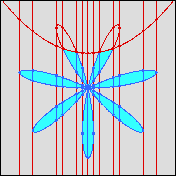

The CAD2D program is a minor modification of QEPCAD for quantifier-free formulas in 2 variables. It is able to do some lifting steps completely with validated floating-point arithmetic, which can lead to much reduced overall time for 2-dimensional CAD computation. Particularly, if you're interested in plotting a 2-dimensional CAD, this is a better choice than QEPCAD. It's a bit buggy, though. Not in the "wrong answer" kind of way, but in the "might crash" kind of way. Work in progress!
Using CAD2D CAD2D works like QEPCAD, for the most part. The main difference is that once the formula is entered, the program automatically goes through the normalization, projection, and stack construction phases without any user interaction.
prompt% cad2d
=======================================================
CAD2D - A Program for producing CADs of R^2
Based on QEPCAD Version B 0.0, 26 Jul 2002, by Hoon Hong
with contributions by: Christopher W. Brown, George E.
Collins, Mark J. Encarnacion, Jeremy R. Johnson
Werner Krandick, Richard Liska, Scott McCallum,
Nicolas Robiduex, and Stanly Steinberg
=======================================================
Enter an informal description between '[' and ']':
[ An interesting CAD of R^2 to plot ]
Enter a variable list:
(x,y)
Enter the number of free variables:
2
Enter a prenex formula:
[ (x^2 + y^2)^4 - 7 x^6 y + 35 x^4 y^3 - 21 x^2 y^5 +
y^7 <= 0 /\ 2 y < x^2 + 1 ].
=======================================================
Before Solution >
p-2d-cad -1.25 1.25 -1.25 1.25 0.005 cad2.eps
Before Solution >
quit
Quitting the QEPCAD system... Bye!
prompt%
|
cad1.eps |
Implementation Information
CAD2D is in the cad2d directory. It is essentially
just a few modified files from QEPCAD, linked together with the
regular QEPCAD libraries to form a program that does a little
bit of optimization of 2D CAD construction. The code that does
the numerical stuff is in extensions/lift2D.